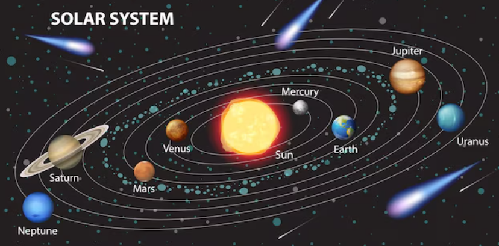

The solar system has one star, eight planets, five officially named dwarf planets, hundreds of moons, thousands of comets, and more than a million asteroids. Our solar system is located in the Milky Way, a barred spiral galaxy with two major arms, and two minor arms. Our Sun is in a small, partial arm of the Milky Way called the Orion Arm, or Orion Spur, between the Sagittarius and Perseus arms. Our solar system orbits the center of the galaxy at about 515,000 mph (828,000 kph). It takes about 230 million years to complete one orbit around the galactic center. We call it the solar system because it is made up of our star, the Sun, and everything bound to it by gravity.
